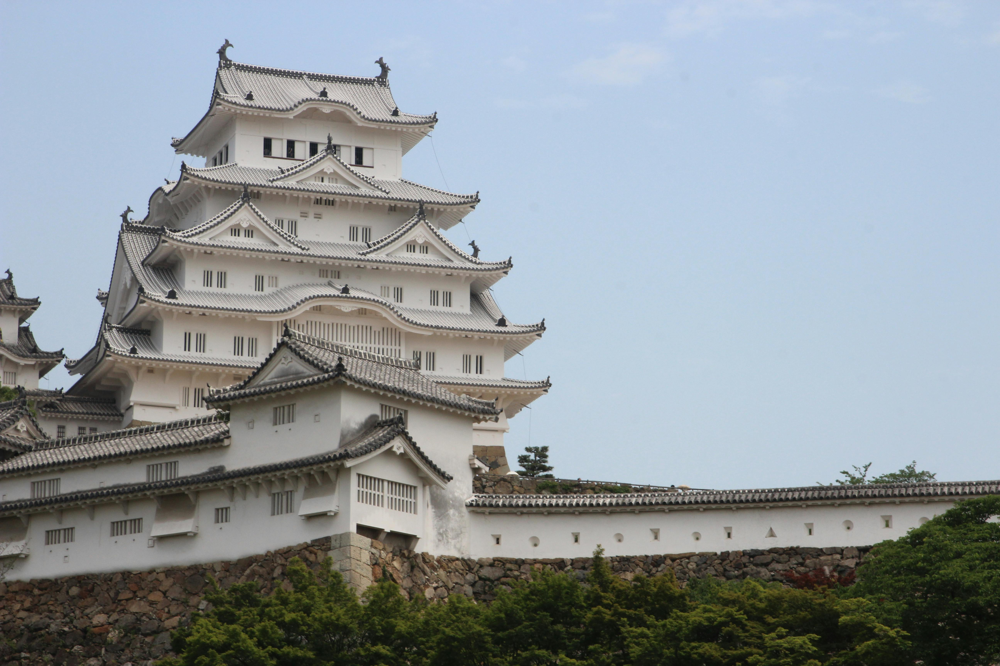
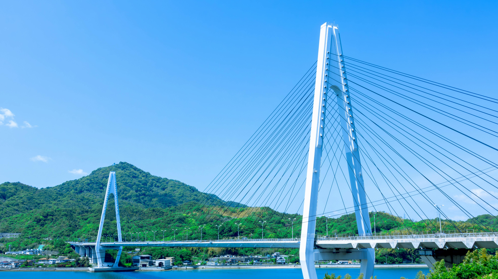

全体日程
サークルでのライドの開始点である尾道に行くまでに、
一度名古屋の実家に帰り、家族旅行を兼ねて神戸などを訪れながら移動します。
宿泊先は島ごとに特色があり、観光と休息をバランス良く配置しました。
日程詳細
| 日付 | 行程 | 距離 |
|---|---|---|
| 8/21 (木) |
9:30 東京駅 → 11:09 名古屋（東海道新幹線 のぞみ 特大荷物席） 12:00～14:00 祖母も連れて家族で昼食 |
366 km |
| 8/22 (金) |
名古屋の実家にて休息 予約した美容室に行く |
— |
| 8/23 (土) |
名古屋発 → 大阪・神戸経由 → 赤穂温泉へ（家族4人／自家用車） 姫路城見学 — 姫路城公式サイト： https://www.city.himeji.lg.jp/castle/  Photo by Sam Schiro on Pexels (CC0) 16:00 銀波荘チェックイン |
327 km |
| 8/24 (日) |
10:00 銀波荘チェックアウト 尾道ロープウェイ： https://mt-senkoji-rw.jp/ 千光寺展望台（千光寺公園）： https://www.city.onomichi.hiroshima.jp/site/onomichikanko/1316.html 猫の細道： https://ihatov.in/cattrail/ 文学のこみち： https://www.city.onomichi.hiroshima.jp/site/onomichikanko/1239.html 16:00 尾道駅集合（ロードバイクサークル仲間と合流） 18:00 尾道やすらぎの宿しーそー チェックイン |
138 km |
| 8/25 (月) |
09:00 スタート → 今治（しまなみ海道） 12:30 来島海峡大橋散策  Photo by Meinen Ryu on Pexels (CC0) 17:00 サンライズ糸山チェックイン |
54.4 km |
| 8/26 (火) |
09:00 スタート → 松山（はまかぜ海道 約65 km） 13:00 松山城観光 18:00 松山ニューグランドホテルチェックイン |
47 km |
| 8/27 (水) |
11:00 チェックアウト 輪行で松山空港へ移動 14:20 松山 → 15:55 羽田（ANA592） |
831 km |